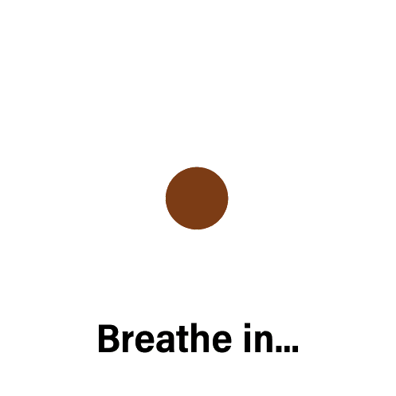

Overcoming anxiety and panic attacks
A little bit
of stress can be useful, as it can help motivate us to do our best, but for
some people feelings of anxiety get out of control. Anxiety is an emotion characterized by feelings of tension, worried thoughts, and physical changes like increased blood pressure.
Panic attack is a sudden spell or attack when you felt frightened, anxious or very uneasy in a
situation when most people would not feel afraid.During one of these attacks the following
symptoms may occur:
Things around you feel unreal.
Sweating.
Blurred vision.
Pounding heart.
Tingling fingers or feet.
When the panic becomes severe most people try to get out of the particular situation, hoping the
panic will stop.Occasionally, some people want to be alone so that they don't embarrass
themselves in some way. When individuals start associating panic attacks with certain situations,
they often try to minimise the panic attacks by avoiding the same or similar situations. For
example, some people who have their first panic attack on a train may start to avoid trains and
buses in the future. When this avoidance is widespread and severe, the condition is called
Agoraphobia.
Coping with anxiety and panic attacks
The first few times that someone experiences a panic are usually very frightening, because this is a
new experience that seems strange and abnormal. However, after many such experiences most
people know deep down that they are unlikely to either collapse, die, or go crazy.However, many fear that next time may be different - that the next panic may
be the worst. Some people manage to resign themselves to the experience of panic, even though
they don't like the experience.Below are some of the ways one can utilize:
- Talk openly and honestly: If you are concerned about someone's well-being, it's important to talk to them about it. Be honest and express your concern for their safety. Listen without judgment and offer support.
- Resources: Provide information about resources for mental health support, such as suicide hotlines or counseling services. Encourage the person to seek help and offer to assist them in finding appropriate resources.
- Create a safe environment: Remove any items that could be used for self-harm, such as medications or sharp objects. Ensure that the person has access to a supportive network of friends or family members.
- Follow up: After expressing concern and offering support, check in with the person regularly to see how they are doing. Follow up on any plans to seek help and offer ongoing support.
- Awareness: learn a bit about anxiety and panic and to realise that some of it is shared by all of us
that some of it is shared by all of us
- Acceptance:Recognising the feeling, naming what is happening to you and allowing
a bit of time for it to pass sounds too simple but does often help. People
who suffer from problems with anxiety usually become anxious about
being anxious, and so a feedback loop develops which makes it much
worse. If you can just notice and name it and just keep breathing, that
usually helps.
- Exercise:Whilst it won’t ‘solve’ anxiety it can help to release the physical tension
that goes with it. The usual guideline is to do at least thirty minutes with
your heart rate raised. This might be jogging, riding a bike, going to a
gym or just walking at a brisk pace. Exercise seems to shift the body out
of the ‘fight or flight’ state and bring it back to a more normal resting
state. It tends to ‘flush’ through the body chemicals like adrenalin that
go with anxiety, and to release a few endorphins, one of the body’s ‘feel
good’ chemicals.
- Getting Help Counselling and therapy are generally very helpful for overcoming
anxiety and panic attacks. This usually involves looking at the sort of
thoughts that are happening with the anxiety, ways of changing
unhelpful thoughts, ways of recognising strengths you can draw upon
and ways of relaxing. It often then involves taking small steps to face
whatever triggers the anxiety in a safe and controlled way.
Relaxation training: Relaxation is the voluntary letting go of tension. This tension can be physical tension in the
muscles or it can be mental, or psychological, tension.The aim of the exercise is to
relax you, not get you even more tense.
When sitting down or lying in private,
- Take a small breath and hold it for up to 7 seconds
- At the same time straighten and stiffen your arms and legs out in front of you.
- After 7 seconds breathe out and slowly say the word "relax" to yourself
- Let all the tension go from your muscles.
- Repeat if necessary until you feel relaxed.
When in a public space,
- Take a small breath and hold it for up to 7 seconds.
- At the same time slowly tense leg muscles by crossing your feet at the ankles and press down
with the upper leg while trying to lift the lower leg
- After 7 seconds breathe out and slowly say the word "relax" to yourself.
Let all the tension go from your muscles- As an alternative you can pull the legs sideways in opposite directions while keeping them
locked together at the ankles, or combine these two movements
For severe anxiety some people find medication helpful and speaking
with a psychologist can be a good idea. Anxiety can sometimes be affected by
physical conditions and talking with a doctor can help respond to this or
to rule it out.